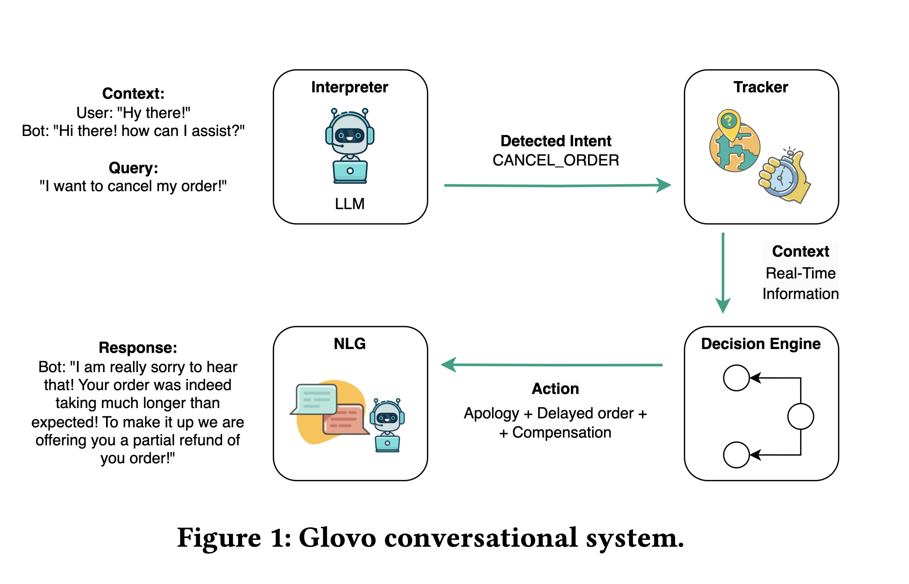
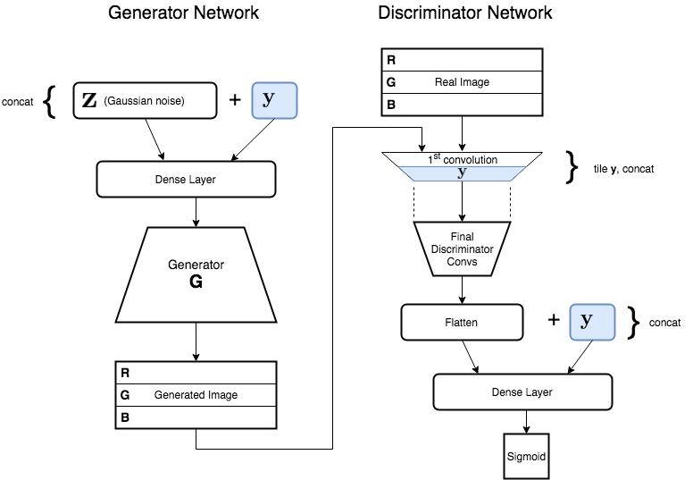

Projects
A collection of my work in AI and Machine Learning

LLM-powered Customer Support
Leveraging Large Language Models for automated customer support in food delivery. Accepted in KDD 2024 Workshop on Two-sided Marketplace Optimization.
Read Paper
@Glovo
Nafoto AI
AI-Powered Professional Photography platform using latest Image Generation models for headshots, personal AI characters, and product photography.
View Project
@PersonalProject

Deep Bayesian Multi-Armed Bandits
PyTorch framework for Bayesian ML algorithms in online advertising, focusing on exploration-exploitation trade-offs.
Read Thesis
@AmazonDevelopmentCenter

GANs for Painting Generation
Research on Generative Adversarial Networks for artistic image synthesis. Accepted in ICMV 2019 (International Conference on Machine Vision).
Read Paper
@UniversityOfEdinburgh